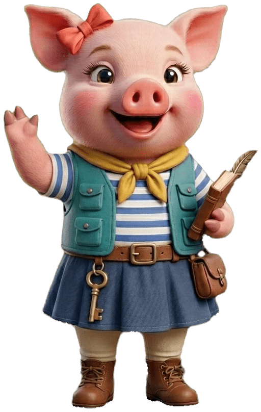

Testfamilien
gesucht!
Helft uns, die neue Lern-App rund ums Geld für Kinder ab 8 Jahren vor dem Start besser zu machen.

Worum geht es?
Taleria ist ein Lernspiel: Mit Talo, dem Fuchs, und Tala, dem Schwein, segeln Kinder von Insel zu Insel und lernen, wie Geld funktioniert. Was ist Geld wert? Was brauche ich wirklich? Wie spare ich für einen Wunsch? Mit Bildergeschichten, Schätzfragen, Mini-Spielen und Tauchgängen. Alle Beträge sind virtuell.
Wen wir suchen
- Familien mit Kindern ab 8 Jahren
- ein Handy oder Tablet (iPhone, iPad oder Android)
- Lust, ehrlich zu sagen, was gefällt und was nicht
- Vorwissen über Geld braucht niemand
Was ihr bekommt
- Taleria vor allen anderen ausprobieren
- alle Inseln kostenlos während der Testphase
- Gesprächsanlässe über Geld in der Familie
- eure Ideen landen direkt in der App
So läuft der Test ab
Anmelden: Ihr meldet euch bei Marc und bekommt den Link zur Testversion und eine kurze Anleitung.
Einrichten: Eltern-Konto und Kinder-Profil anlegen, das dauert etwa 10 Minuten. Es läuft im Browser, ohne App Store.
Spielen: Euer Kind spielt in seinem Tempo. Ihr könnt Aufträge und virtuelles Taschengeld ausprobieren.
Rückmeldung: Am Ende ein kurzer Fragebogen für Kind und Eltern, gern auch Bildschirmfotos zwischendurch.
Sicher für Kinder
Keine Werbung, keine Käufe durch Kinder, keine Chats und keine Links nach außen. Wir speichern nur einen Spitznamen und das Geburtsjahr, keinen echten Namen und keinen Standort, auf Servern in der EU. Ihr könnt alles jederzeit selbst löschen. Es ist eine Testversion: Inhalte können sich noch ändern, und hier und da ist noch ein Platzhalter statt eines Bildes.